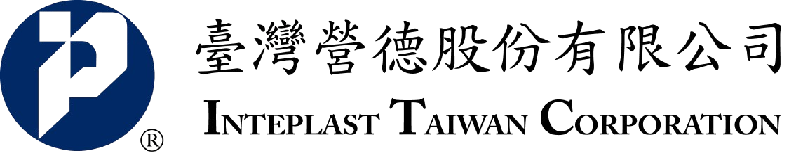

ECO-LABELED PRODUCTS · 綠色標章產品
環保不打折，每一款都經過層層把關
台塑環保拉繩清潔袋與台塑環保清潔袋，皆通過環保標章審查並取得使用證書；從原料到製程，將友善環境落實於日常使用。

由台塑企業、INTEPLAST USA 與長庚生技共同投資成立，臺灣營德以台塑品牌塑膠袋為核心，於嘉義新港與越南工廠自動化生產，提供多元塑膠袋與包裝產品。
嘉義新港工廠一貫作業，從家用清潔袋到專利 Scale Sheet。
台塑環保拉繩清潔袋與台塑環保清潔袋，皆通過環保標章審查並取得使用證書；從原料到製程，將友善環境落實於日常使用。